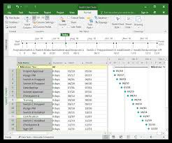
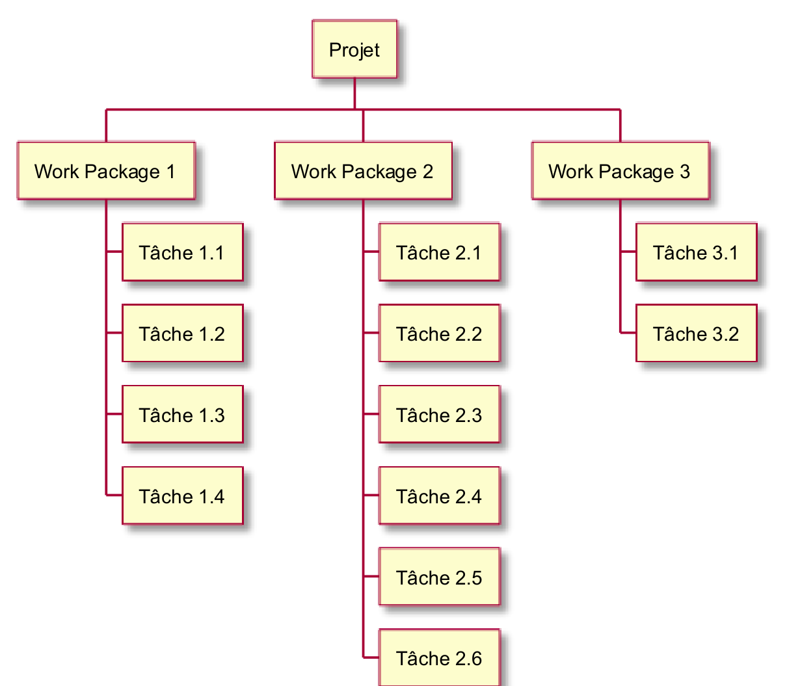
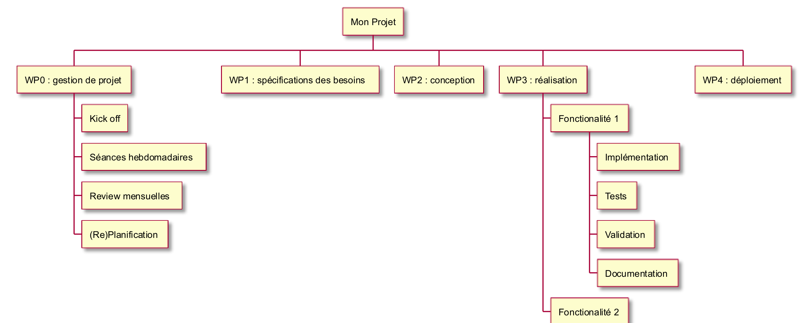
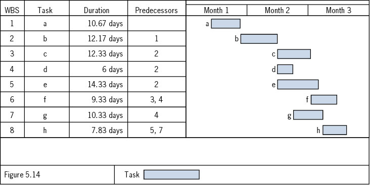
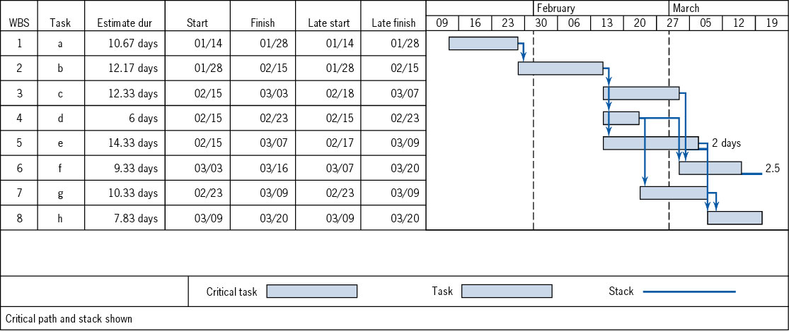
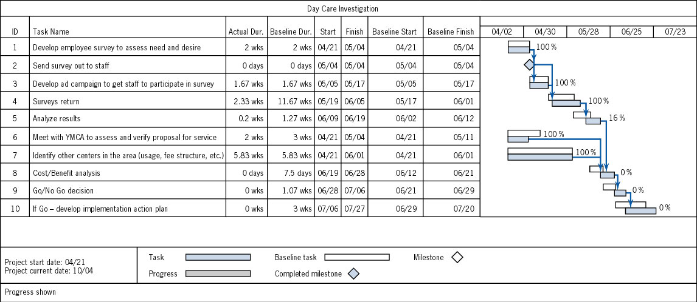
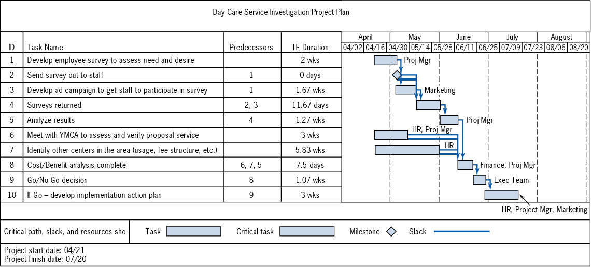
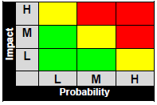
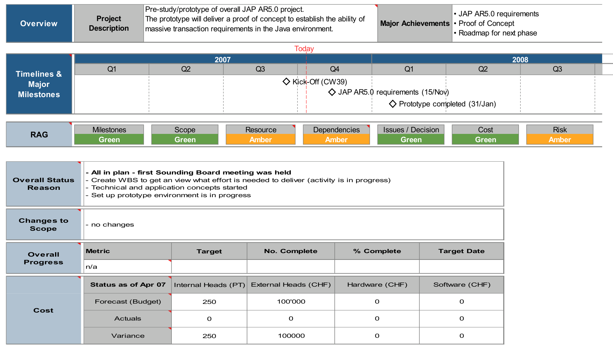
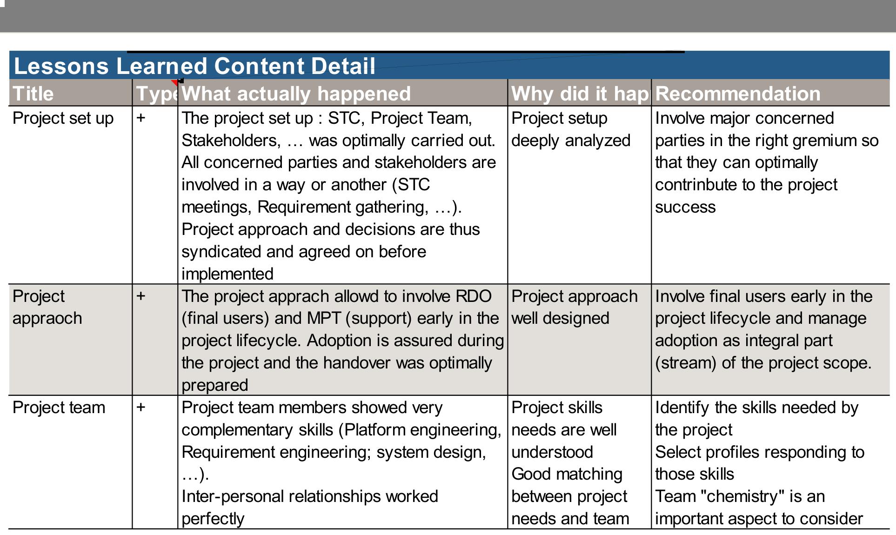

2243.2 Génie Logiciel - 2026-2027
1. Définitions
2. Feuille de route du cours
3. Initiation de projet
4. Planification
5. Suivi et contrôle
6. Clôture du projet
7. Récapitulatif
« En informatique, un logiciel est un ensemble de séquences d'instructions interprétables par une machine et d'un jeu de données nécessaires à ces opérations. »
https://fr.wikipedia.org/wiki/Logiciel

Savoir-faire particulier, hors contexte industriel
Théories, méthodes, technologies reconnues dans un contexte industriel
« Le génie logiciel, ou l'ingénierie logicielle (en anglais : software engineering), est une science de génie industriel qui étudie les méthodes de travail et les bonnes pratiques des ingénieurs qui développent des logiciels. »
Activités, ressources, outils (IDE, support), normes, contrôles, planification de la gestion du projet
Découpage en sous-tâches, estimation du travail, durée, coûts, risques, etc.
Avancement, délais, coûts, risques, ajustements
Activités, ressources, outils (IDE, support), normes, contrôles, planification de la gestion du projet
Améliorations ou obligation technique (obsolescence)
Améliorations commerciales et procédurales
La situation idéale est une combinaison des deux aspects
Démarrer un projet pour suivre une mode
Guider un projet par la technologie
Technique
Économique
Organisationnelle
Découpage en sous-tâches, estimation du travail, durée, coûts, risques, etc.

WBS (Work Breakdown Structure)
Liste hiérarchisée de tâches
Règle des 100 %
Pas de recouvrement (tâches indépendantes)
Décomposition par résultats, pas par action (livrables, sous-fonctions, constituants)
Implication des participants
La gestion de projet est la première tâche (WP0)
Une tâche pour les spécifications des besoins
Au moins une tâche pour la conception
Au moins une tâche pour le déploiement
Au moins une tâche pour la documentation
Plusieurs tâches pour la réalisation (hardware, software, etc.)

Si on ne peut pas estimer la charge
Si on n'a pas la vue d'ensemble des tâches et des étapes à réaliser ⇒ découpage global / général




| Risques financiers | Investissements, financement, cash flow |
| Risques légaux | Changements de lois, propriété intellectuelle, protection juridique, garantie |
| Risques physiques | Catastrophes, décès, météo |
| Risques intangibles | RH : relationnels, vie privée |
| Risques techniques | Infrastructure, logiciels, obsolescence, time to market |
| Risques de sécurité | Attaques informatiques, fiabilité, confidentialité |
Risque = problème potentiel
Probabilité d'occurrence (P)
Impact (I)
Criticité (C)

C = P · I
Il faut bien connaître les facteurs de risque qui mènent à ces échecs
Avancement, délais, coûts, risques, ajustements
Relevé périodique du statut du projet selon les axes suivants :
Communication des rapports aux acteurs concernés


Les phases planification, exécution et suivi sont effectuées en cycle autant de fois que nécessaire durant le projet.